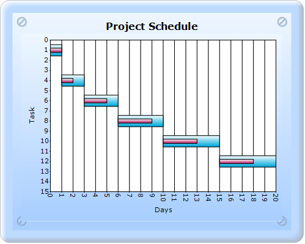

To create a Gantt chart through Builder:
1. In Controller, return view to the corresponding View page.
|
[C#] public ActionResult SimpleChart() { return View(); }
|
2. In the View page, invoke the ChartBuilder by using the control ID as the first argument.
3. Add the Series to the ChartModel and set the series type to Gantt, and add the Points to the series and set the style.
4. Set the ChartModel and ChartArea properties.
|
View[ASPX] <%= Html.Chart("SimpleChart").Series(series =>{ series.Add().Type(Syncfusion.Windows.Forms.Chart.ChartSeriesType.Gantt) .Text("Completion") .Style(style=>{ style.PointWidth(0.3f); }).Points(points =>{ points.Add(1, 0, 1); points.Add(4, 1, 2); points.Add(6, 3, 5); points.Add(8, 6, 9); points.Add(10, 10, 13); points.Add(12, 15, 18); }); series.Add().Type(Syncfusion.Windows.Forms.Chart.ChartSeriesType.Gantt) .Text("Task") .Style(style=>{ style.PointWidth(0.8f); }).Points(points => { points.Add(1, 0, 1); points.Add(4, 1, 3); points.Add(6, 3, 6); points.Add(8, 6, 10); points.Add(10, 10, 15); points.Add(12, 15, 20); }); }).ChartArea(area=>{ area.XAxesLayoutMode(Syncfusion.Windows.Forms.Chart.ChartAxesLayoutMode.Stacking); }).Skins(ChartModelSkins.Office2007Blue) .ChartSeriesSkins(ChartSeriesSkins.Analog) .ElementsSpacing(0) .BorderStyle(System.Web.UI.WebControls.BorderStyle.None) .Font(new System.Drawing.Font("Verdana", 12, System.Drawing.FontStyle.Bold)) .Size(new System.Drawing.Size(500, 400)) .BorderAppearance(border =>{ border.SkinStyle(Syncfusion.Windows.Forms.Chart.ChartBorderSkinStyle.Pinned); }).PrimaryYAxis(yaxis =>{ yaxis.Title("Task") .DrawGrid(false) .Inversed(true) .RangeType(Syncfusion.Windows.Forms.Chart.ChartAxisRangeType.Set) .Range(range => { range.Min(0) .Max(15) .Interval(1); }); }).PrimaryXAxis(xaxis =>{ xaxis.Title("Days") .RangeType(Syncfusion.Windows.Forms.Chart.ChartAxisRangeType.Set) .Range(range => { range.Min(0) .Max(15) .Interval(1); }).LabelRotate(true) .LabelRotateAngle(90); }).Text("Project Schedule") %> |
|
View[cshtml] @{ Html.Chart("SimpleChart").Series(series =>{ series.Add().Type(Syncfusion.Windows.Forms.Chart.ChartSeriesType.Gantt) .Text("Completion") .Style(style=>{ style.PointWidth(0.3f); }).Points(points =>{ points.Add(1, 0, 1); points.Add(4, 1, 2); points.Add(6, 3, 5); points.Add(8, 6, 9); points.Add(10, 10, 13); points.Add(12, 15, 18); }); series.Add().Type(Syncfusion.Windows.Forms.Chart.ChartSeriesType.Gantt) .Text("Task") .Style(style=>{ style.PointWidth(0.8f); }).Points(points => { points.Add(1, 0, 1); points.Add(4, 1, 3); points.Add(6, 3, 6); points.Add(8, 6, 10); points.Add(10, 10, 15); points.Add(12, 15, 20); }); }).ChartArea(area=>{ area.XAxesLayoutMode(Syncfusion.Windows.Forms.Chart.ChartAxesLayoutMode.Stacking); }).Skins(ChartModelSkins.Office2007Blue) .ChartSeriesSkins(ChartSeriesSkins.Analog) .ElementsSpacing(0) .BorderStyle(System.Web.UI.WebControls.BorderStyle.None) .Font(new System.Drawing.Font("Verdana", 12, System.Drawing.FontStyle.Bold)) .Size(new System.Drawing.Size(500, 400)) .BorderAppearance(border =>{ border.SkinStyle(Syncfusion.Windows.Forms.Chart.ChartBorderSkinStyle.Pinned); }).PrimaryYAxis(yaxis =>{ yaxis.Title("Task") .DrawGrid(false) .Inversed(true) .RangeType(Syncfusion.Windows.Forms.Chart.ChartAxisRangeType.Set) .Range(range => { range.Min(0) .Max(15) .Interval(1); }); }).PrimaryXAxis(xaxis =>{ xaxis.Title("Days") .RangeType(Syncfusion.Windows.Forms.Chart.ChartAxisRangeType.Set) .Range(range => { range.Min(0) .Max(15) .Interval(1); }).LabelRotate(true) .LabelRotateAngle(90); }).Text("Project Schedule") .Render();
} |
5. Build and run the application, to get the following output:

Figure 83: Chart displaying Gantt Series